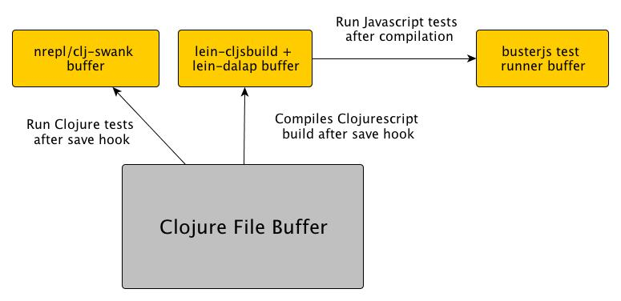

-
Host differences (Classes, Regexp, Functions)
-
Small differences between Clojure and Clojurescript APIs
e.g.-invokevsinvoke -
The ns hell
e.g.:requirevs:require-macro -
Among others...
Host differences (Classes, Regexp, Functions)
Small differences between Clojure and Clojurescript APIs
e.g. -invoke vs invoke
The ns hell
e.g. :require vs :require-macro
Among others...
Things we'll cover:
Port Clojure → Clojurescript effectively and without pain
Test your librares in both languages using the same test suite
Get fast feedback in development process
dalap_rules.clj
{
;; input clojure file -> output clojurescript file
["src/clj/awesome_library/core.clj" "src/cljs/awesome_library/core.cljs"]
[ #_(Opt. additional transformation rules go here) ]
}
Excludes Clojure forms from code transformation.
(deftest upper-case-test (is (= (upper-case "hello world") "HELLO WORLD"))) ^:clj (deftest java-io-test (assert (instance? File (file "/fixture/one.txt"))))
(deftest upper-case-test (is (= (upper-case "hello world") "HELLO WORLD")))
Add Clojurescript, without breaking your Clojure code.
(ns clout.test.core
^:clj (:require [ring.mock.request :refer [request]])
#_(:cljs (:require [goog.Uri :as uri])))
#_(:cljs-do
(defn request [method uri]
{:uri (.getPath (goog.Uri. uri))
:request-method method})
(defn other-fn []
;...
))
Add Clojurescript, without breaking your Clojure code.
(ns clout.test.core
(:require [goog.Uri :as uri]))
(do
(defn request [method uri]
{:uri (.getPath (goog.Uri. uri))
:request-method method})
(defn other-fn []
;...
))
ns macro
(ns monads.test.core-test
(:require [monads.core :as m]
#_(:cljs [monads.core writer-transformer state-transformer]))
^:cljs-macro (:require [monads.macros :as monadic])
^:clj (:import [monads.core writer-transformer state-transformer]))
(ns monads.test.core-test
(:require [monads.core :as m]
[monads.core writer-transformer state-transformer])
(:require-macros [monads.macros :as monadic]))
^{:cljs
'(ns monads.test.core-test
(:require [monads.core :as m]
[monads.core writer-transformer state-transformer])
(:require-macros [monads.macros :as monadic]))}
(ns monads.test.core-test
(:require [monads.core :as m]
[monads.macros :as monadic])
(:import [monads.core writer-transformer state-transformer])
(ns monads.test.core-test
(:require [monads.core :as m]
[monads.core writer-transformer state-transformer])
(:require-macros [monads.macros :as monadic]))
{
;; Key a mapping from a Clojure file to a Clojurescript file
["src/clj/awesome_library/core.clj" "src/cljs/awesome_library/core.cljs"]
[
;; Some rules that lein-dalap provides by default
(dalap/when (dalap/has-meta? :cljs))
(dalap/transform (dalap/replace-with-meta :cljs))
;; etc ..
]
;; .. Other files to transform
}
{
;; Key a mapping from a Clojure file to a Clojurescript file
["src/clj/awesome_library/core.clj" "src/cljs/awesome_library/core.cljs"]
[
;; pairs
'java.lang.String 'string
'deref '-deref
;; etc ..
]
;; .. Other files to transform
}
All tags shown so far are implemented using code selectors.
e.g :clj, :cljs, :cljs-macro
Fully qualified Java types are transformed to their JS equivalent.
e.g java.lang.String will be mapped to JS' string
Add your own tags for code transformation.
Add new selection rules by exploring the CLJ form tree.
Specify code transformations in a granular level through project/dalap_rules.clj.
Started by checking the usual suspects
Compatible clojuresque API for both Clojure and Clojurescript
Not a new Clojure test library, just wraps clojure.test behind the curtains
Parallel test execution in multiple envs (e.g nodejs, browser, JVM)
using busterjs
project.clj changes
(defproject awesome-library
;; ..
:dependencies [ ;; other dependencies
[com.birdseye-sw/buster-cljs "0.1.0"]]
;; ..
)
buster.describe("Adding numbers", function() {
buster.describe("natural numbers", function() {
buster.it("adds correctly two numbers", function(){
buster.assert((2 + 2) === 4);
});
});
buster.describe("floating numbers", function() {
// ...
});
});
(deftest adding-numbers
(testing "natural numbers"
(testing "adds correctly two numbers"
(is (= (+ 2 2) 4)))
(testing "floating numbers"
;; ..
)))
| clojure.test | busterjs |
|---|---|
deftest |
buster.describe |
testing |
buster.describe |
testing |
buster.it |
is |
buster.assert |
(deftest adding-numbers
(describe "natural numbers"
(it "adds correctly two numbers"
(is (= (+ 2 2) 4)))
(describe "floating numbers"
;; ..
)))
(ns awesome-library.test.core-test
#_(:cljs (:require-macros [buster-cljs.macros :refer
[initialize-buster deftest describe it is]]))
^:clj (:require [buster-cljs.clojure :refer [deftest describe it is]]))
#_(:cljs-do (initialize-buster))
(deftest adding-numbers
(describe "natural numbers"
(it "adds correctly two numbers"
(is (= (+ 2 2) 4)))
(describe "floating numbers"
;; ..
)))
$ lein test lein test monads.test.core Ran 72 tests containing 139 assertions. 0 failures, 0 errors.
# $ npm install # $ lein cljsbuild once $ ./node_modules/buster/bin/buster-test -e browser PhantomJS 1.8.2, Linux: ................................................. Safari 6.0.2, Mac OS X 10.7.5: ................................................. Firefox 19.0, Mac OS X 10.7: ................................................. 426 test cases, 432 tests, 774 assertions, 0 failures, 0 errors, 0 timeouts $ ./node_modules/buster/bin/buster-test -e node -r quiet 71 test cases, 72 tests, 129 assertions, 0 failures, 0 errors, 0 timeouts
language: - node_js - clojure lein: lein2 jdk: - oraclejdk7 node_js: - "0.8" before_script: - "export DISPLAY=:99:0" - "lein2 cljsbuild once" - "./node_modules/buster/bin/buster-server &" - "sleep 3" - "phantomjs ./node_modules/buster/script/phantom.js &" - "sleep 3" script: - lein2 test && npm test

Third Party
Internal Projects
Your awesome library/project?
Old library: if it makes sense, make it front-end usable
New library: Consider Clojurescript in your library from the very start
Make Clojurescript more awesome!